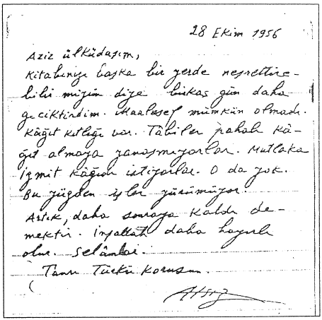
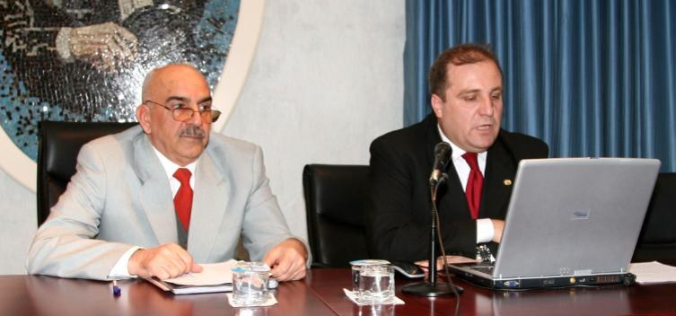

Yazar dosyası
Niyazi Yıldırım Gençosmanoğlu
1929–1992

Niyazi Yıldırım Gençosmanoğlu’na duyulan ilgi, 1996’da Gazi Üniversitesinde tamamlanan yüksek lisans tezine uzanır. Şairin hayatını ve şiir sanatını inceleyen kitap 2000’de yayımlandı. Şiir kitapları 2002’de Türk Edebiyatı Vakfı Yayınlarında Bütün Şiirleri adıyla, 2023’te de Bilge Kültür Sanat yayınları arasında dört kitap hâlinde eleştirel basımla okura sunuldu. Dosyada bu yayınların yanı sıra şairin kendi sesinden okuduğu şiirler, bir şiir müsveddesi ve Atsız’ın ona yazdığı mektup yer alır.
Çalışmalar
Tez ve kitap
- 2000Niyazi Yıldırım Gençosmanoğlu: Hayatı ve Şiir Sanatı. Atatürk Kültür Merkezi Başkanlığı Yayınları. Tanıtım sayfaları (PDF)
- 1996Niyazi Yıldırım Gençosmanoğlu, Hayatı, Şiir Sanatında Âhenk ve Tarih Şuuru. Yüksek lisans tezi, Gazi Üniversitesi Sosyal Bilimler Enstitüsü, danışman Prof. Dr. Sadık Kemal Tural. Tam metin (PDF, 1,3 MB)
Eleştirel basımlar
- 2023Niyazi Yıldırım Gençosmanoğlu, Destanlar Burcu (genişletilmiş), Bozkurtların Destanı, Alperenler Destanı ve Dede Korkut’tan Boğaç Han ve Salur Kazan Destanları. Yeniden düzenlenmiş eleştirel basım, dört kitap. Bilge Kültür Sanat. Tanıtım sayfaları (PDF): Destanlar Burcu, Bozkurtların Destanı, Alperenler Destanı, Dede Korkut’tan Boğaç Han ve Salur Kazan Destanları
- 2002Niyazi Yıldırım Gençosmanoğlu, Bütün Şiirleri 1–3: Destanlar Burcu, Bozkurtların Destanı, Alperenler Destanı. Eleştirel basım. Türk Edebiyatı Vakfı Yayınları. Tanıtım sayfaları (PDF): Destanlar Burcu, Bozkurtların Destanı, Alperenler Destanı
Makale ve yazılar
- 2024“Niyazi Yıldırım Gençosmanoğlu Üzerine Bir Söyleşi.” İmbik: Kültür, Sanat ve Edebiyat Dergisi 4 (25): 20–24. Tam metin (PDF)
- 2021“Niyazi Yıldırım Gençosmanoğlu’nun Şiir Kitaplarının Yeniden Yayımlanması Üzerine.” İLESAM İlim ve Edebiyat Dergisi 7 (32): 35–41. Yazarın metni (PDF)
- 2014“Asrımızın Dede Korkut’u Niyazi Yıldırım Gençosmanoğlu.” Devlet 454: 86–94. Tam metin (PDF)
- 2004“Niyazi Yıldırım Gençosmanoğlu’nun Düz Yazıları.” Bizim Külliye 22: 45–51. Tam metin (PDF)
- 2002“Atsız’ın Niyazi Yıldırım Gençosmanoğlu’na Gönderdiği Mektuplar.” Türk Yurdu 22 (184): 44–49. Özet ve tam metin
Kendi sesinden
Videoda Niyazi Yıldırım Gençosmanoğlu kendi şiirlerini okuyor.
Videonun süresi 6 dakika 13 saniyedir.
El yazıları



Anma programı (2011)
“Şair Niyazi Yıldırım Gençosmanoğlu’nu Anma” programı 9 Mart 2011’de Gaziantep Üniversitesi Ömer Asım Aksoy Konferans Salonunda gerçekleşti. İLESAM ile Gaziantep Üniversitesi Kültür Müdürlüğüne bağlı Türkçe Topluluğunun iş birliğiyle hazırlanan programı, topluluğun akademik danışmanı Arif Yılmaz yönetti. Yılmaz konuşmasında Gençosmanoğlu’nu Türk edebiyatının en büyük destan şairleri arasında gösterdi. Şairin oğlu Talat Gençosmanoğlu da babasını anlatan bir konuşma yaptı. Program, Türkçe Topluluğu öğrencilerinin okuduğu şiirler ve şairin bestelenmiş şiirlerinden oluşan dinletiyle sürdü. İki gün sonra İLESAM Gaziantep Şubesinde ikinci bir anma programı düzenlendi.



Fotoğraflar Gaziantep Üniversitesi Haber Merkezinin 9 Mart 2011 tarihli haberinden alınmıştır.